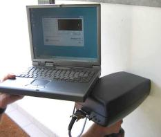
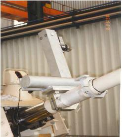
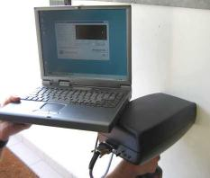
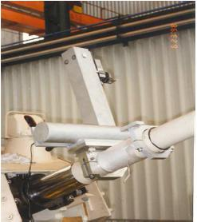

Created in 2002, Walopt is a spin off of the Space Center of Liège (CSL) - University of Liège (BELGIUM)
Walopt manufactures and commercializes products from R&D at CSL
The company collaborates with Cockerill Maintenance and Ingenierie or the Belgian Ministry of Defence among others
The Finder 100 for detection of lead and heavy elements by X-fluorescence can be adapted in relation to the application need
Other products include
Defence
- Optical alignment systems for Defence- Qualification of equipment to MIL Standard
- Optical sighting systems
Services
- Thermal Characterization: infra-red image for thermal conductivity measurement (thermographic camera)- Optical calibration of defence systems
- Consulting: spacecraft technical risk assesment (insurance)
- Design and manufacturing of industrial optical systems
 



Contact Person
Mr JP Collette
Instrumentation
email: jpcollette@walopt.com
tel: +32 477 29 73 34
fax: +32 4 372 00 42
http://www.walopt.com
Av E Ysaye 44
4053 Embourg
Belgium